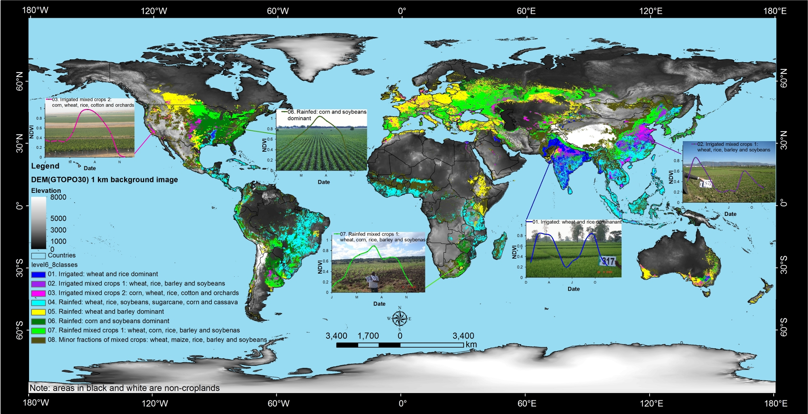

Source: Thenkabail et al. 2012, PE&RS Vol. 78, No.8; August 2012.
The spatial distribution of global cropland areas (~1.5 billion hectares) and five dominant crop types (wheat, rice, maize, barley and soybeans). This composite map was produced by Thenkabail and Gumma through spatial modeling involving remote sensing derived global irrigated and rainfed croplands (Thenkabail et al., 2011, 2009a, 2009b) and five dominant global crop types from other sources (Ramankutty et al. (2008), Monfreda et al. (2008), and Portman et al. (2009)). The 5 crops constitute about 60% of all global cropland areas.
Cover page credits: Dr. Prasad S. Thenkabail, U.S. Geological Survey (USGS) and Dr. Murali Krishna Gumma, International Rice Research Institute (IRRI) with inputs from the USGS Powell Center working group on global croplands (WGGC) team members (http://powellcenter.usgs.gov/current_projects.php#GlobalCroplandMembers). For more information contact: pthenkabail@usgs.gov or thenkabail@gmail.com. The image was produced for the PE&RS Special issue on global croplands, Vol. 78, No.8; August 2012